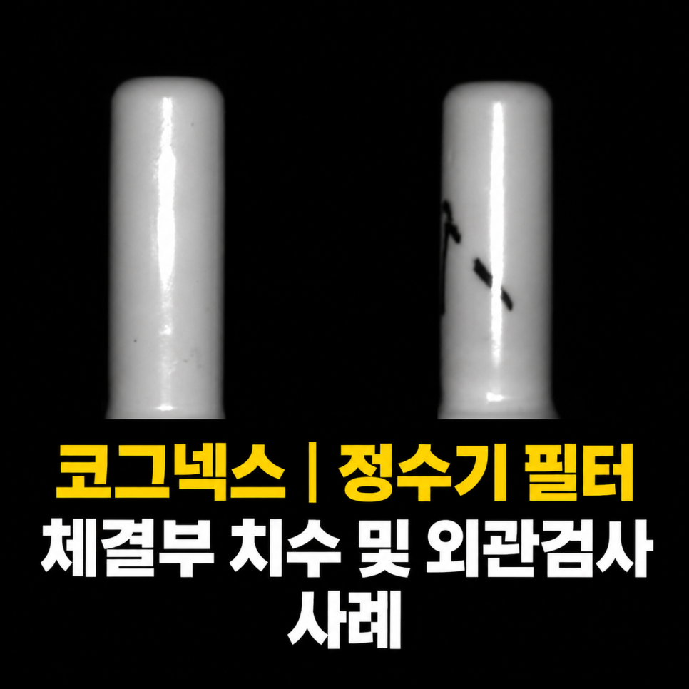
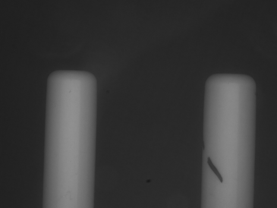
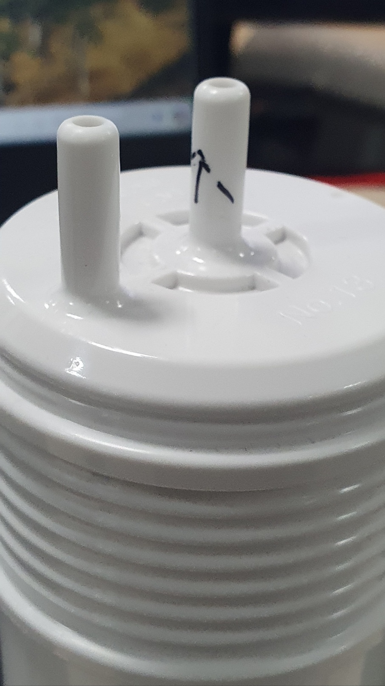

생활가전 · 정수기 필터 · 광학 · 조명
정수기 필터 체결부 치수·외관검사 시스템 사례
Cognex 스마트카메라
광학 조건을 개선해 흰색 플라스틱 체결부의 치수와 찍힘을 함께 검사하고, 생산·검사 데이터를 상위 시스템과 전광판에 연결한 사례입니다.
Project Summary
프로젝트 핵심 구성
- 산업
- 생활가전 · 정수기 필터
- 검사·자동화 대상
- 정수기 필터 체결부 치수·외관검사
- 주요 기술
- Cognex 스마트카메라
- 적용 구분
- 프로젝트 사례
01 · Overview
프로젝트 개요
광학 조건을 개선해 흰색 플라스틱 체결부의 치수와 찍힘을 함께 검사하고, 생산·검사 데이터를 상위 시스템과 전광판에 연결한 사례입니다.
02 · Problem
프로젝트에서 해결해야 했던 문제
고객사는 정수기 필터 상단 체결부를 작업자가 직접 육안으로 검사하고 있었습니다.
검사 항목은 다음과 같았습니다.
체결부 치수 검사
외관 검사
찍힘 및 손상 검사
하지만 다음과 같은 문제들이 반복적으로 발생했습니다.
흰색 플라스틱 재질 특성상 난반사가 심함
검사 기준이 작업자마다 달라질 수 있음
반복적인 육안 검사로 피로도 증가
생산량 증가에 따른 검사 속도의 한계
검사 이력 관리가 어려움
고객사는 검사 정확도를 높이면서도 생산성을 유지할 수 있는 자동 검사 시스템을 원하고 있었습니다.
- 난반사와 곡면 구조
- 치수·찍힘 동시 검사
- 생산 데이터 관리
03 · System
검사·자동화 시스템 구성
광학 조건을 개선해 흰색 플라스틱 체결부의 치수와 찍힘을 함께 검사하고, 생산·검사 데이터를 상위 시스템과 전광판에 연결한 사례입니다.
체결부 위치·치수 검사
외관 판정
생산 데이터 전송

04 · Inspection
프로젝트 배경
자동차나 반도체뿐 아니라 생활가전 부품 역시 작은 외관 불량 하나가 제품 품질과 고객 신뢰에 큰 영향을 줄 수 있습니다.
특히 정수기 필터와 같이 반복적으로 생산되는 제품은 작업자가 모든 제품을 육안으로 검사하기 어렵기 때문에 검사 기준의 표준화와 자동화가 매우 중요합니다.
이번 프로젝트는 정수기 필터 상단 체결부의 치수 및 외관을 자동으로 검사한 머신비전 구축 사례입니다.
심한 난반사 환경에서도 광학 설계를 통해 안정적인 검사 영상을 확보하고, 합리적인 비용의 코그넥스 스마트카메라 시스템으로 자동화에 성공한 프로젝트였습니다.
05 · Inspection
고객의 고민
고객사는 정수기 필터 상단 체결부를 작업자가 직접 육안으로 검사하고 있었습니다.
검사 항목은 다음과 같았습니다.
체결부 치수 검사
외관 검사
찍힘 및 손상 검사
하지만 다음과 같은 문제들이 반복적으로 발생했습니다.
흰색 플라스틱 재질 특성상 난반사가 심함
검사 기준이 작업자마다 달라질 수 있음
반복적인 육안 검사로 피로도 증가
생산량 증가에 따른 검사 속도의 한계
검사 이력 관리가 어려움
고객사는 검사 정확도를 높이면서도 생산성을 유지할 수 있는 자동 검사 시스템을 원하고 있었습니다.
06 · Inspection
가장 어려웠던 것은 난반사였습니다
이번 프로젝트의 가장 큰 난관은 난반사였습니다.
스마트카메라에는 기본적으로 자체 조명이 탑재되어 있지만,
이번 제품은 흰색 플라스틱 재질과 곡면 구조 때문에 자체 조명만으로는 강한 난반사가 발생하여 외관 검사가 거의 불가능한 수준이었습니다.
특히 체결부의 작은 찍힘이나 미세한 외관 불량은 반사광에 묻혀 안정적으로 검출하기 어려운 환경이었습니다.


07 · Inspection
광학 설계가 프로젝트의 핵심이었습니다
ASPEC은 먼저 다양한 광학 테스트를 진행하였습니다.
제품 재질과 형상을 분석한 후
조명의 종류
조사 각도
카메라 위치
촬영 방향
을 반복적으로 검토하여 가장 안정적으로 결함이 드러나는 광학 조건을 설계하였습니다.
그 결과 난반사를 크게 줄일 수 있었으며,
체결부의 치수 측정과 미세한 찍힘 검사까지 안정적으로 수행할 수 있는 영상을 확보하였습니다.
08 · Inspection
하나의 시스템으로 치수와 외관을 동시에 검사
광학 조건을 확보한 후에는 스마트카메라를 이용하여
체결부 높이 및 위치 확인
치수 검사
찍힘 및 외관 검사
를 하나의 검사 공정에서 동시에 수행하도록 시스템을 구성하였습니다.
이를 통해 작업자가 여러 항목을 각각 확인하던 과정을 자동화하여 검사 시간을 단축하고 검사 기준도 표준화할 수 있었습니다.
09 · Inspection
합리적인 비용과 빠른 구축
이번 프로젝트는 고가의 비전 시스템이 아닌 스마트카메라 기반의 합리적인 솔루션으로 구축하였습니다.
또한 스마트카메라의 장점을 활용하여 프로그램 구성과 셋업 시간을 최소화하였고,
짧은 기간 안에 시운전과 양산 적용까지 완료할 수 있었습니다.
고객은 초기 투자 비용을 줄이면서도 안정적인 검사 성능을 확보할 수 있었습니다.
10 · Inspection
검사뿐 아니라 생산 데이터까지 관리
이번 시스템은 단순히 제품을 검사하는 것으로 끝나지 않았습니다.
검사 결과를 실시간으로 상위 시스템에 전송하여
생산 수량
양품 수량
불량 수량
검사 이력
을 실시간으로 관리할 수 있도록 구성하였습니다.
또한 전광판을 통해 생산 현황을 즉시 확인할 수 있어 작업자와 관리자 모두 생산 상황을 한눈에 확인할 수 있었습니다.
자동화는 단순히 사람을 대신하는 것이 아니라 품질 데이터까지 함께 관리할 수 있다는 점에서 더욱 큰 효과를 얻을 수 있었습니다.
11 · Inspection
이번 프로젝트를 통해 고객이 얻은 효과
이번 시스템 구축으로 고객사는 다음과 같은 효과를 얻을 수 있었습니다.
✔ 정수기 필터 체결부 자동 검사
✔ 치수 및 외관 동시 검사
✔ 찍힘 자동 검출
✔ 난반사 문제 해결
✔ 광학 조건 최적화
✔ 작업자의 반복적인 육안 검사 최소화
✔ 검사 기준 표준화
✔ 생산 속도 향상
✔ 실시간 생산 데이터 관리
✔ 합리적인 비용으로 자동화 구축
12 · Inspection
ASPEC의 생각
머신비전 프로젝트는 카메라만 설치한다고 해결되지 않습니다.
제품의 재질과 형상, 설치 공간, 생산 방식까지 모두 고려한 광학 설계가 먼저 이루어져야 안정적인 검사 시스템을 구축할 수 있습니다.
이번 프로젝트 역시 적절한 광학 설계와 스마트카메라를 조합하여 고가의 시스템 없이도 고객이 원하는 검사 성능을 확보할 수 있었던 사례였습니다.
ASPEC은 자동차, 전기차 부품, 제약·바이오, 식품, 생활가전, 전자부품 등 다양한 산업 분야에서 머신비전 시스템을 구축하며 축적한 경험을 바탕으로 고객의 생산 환경에 가장 적합한 자동화 솔루션을 제안하고 있습니다.
Operation
현장 적용과 운영 조건
광학 조건을 개선해 흰색 플라스틱 체결부의 치수와 찍힘을 함께 검사하고, 생산·검사 데이터를 상위 시스템과 전광판에 연결한 사례입니다.
- 난반사와 곡면 구조
- 치수·찍힘 동시 검사
- 생산 데이터 관리
Result
적용 효과
- 정수기 필터 체결부 자동 검사
- 치수 및 외관 동시 검사
- 찍힘 자동 검출
- 난반사 문제 해결
- 광학 조건 최적화
- 작업자의 반복적인 육안 검사 최소화
- 검사 기준 표준화
- 생산 속도 향상
- 실시간 생산 데이터 관리
- 합리적인 비용으로 자동화 구축
Engineering
ASPEC의 머신비전 시스템 설계 방식
검사 대상의 재질과 형상, 설치 공간과 생산 조건에 맞춰 장비·광학·소프트웨어와 설비 연동을 함께 검토합니다.
- 난반사와 곡면 구조
- 치수·찍힘 동시 검사
- 생산 데이터 관리
08 · Related Cases
관련 구축사례
비슷한 공정의 자동화를 검토하고 계신가요?
검사 대상과 불량 샘플, 설치 공간, 택타임을 알려주시면 적용 구성을 검토해 드립니다.